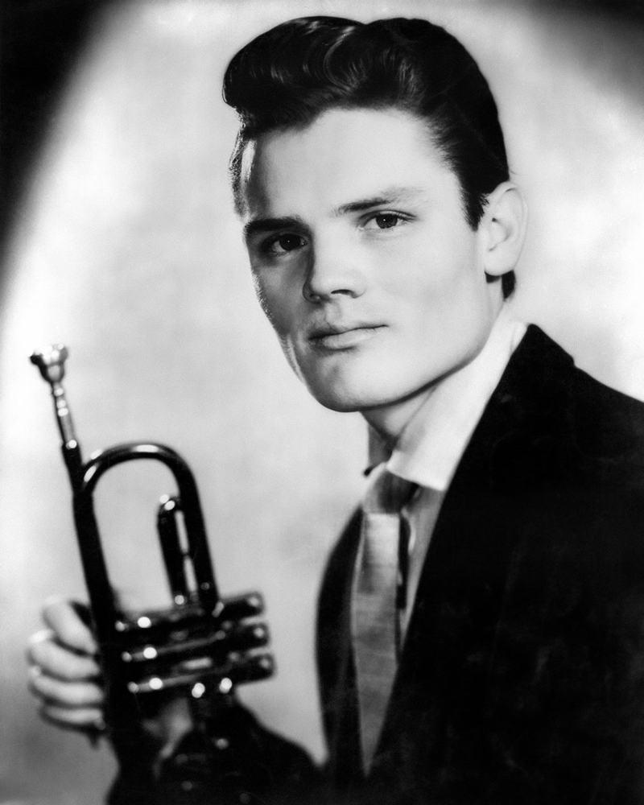
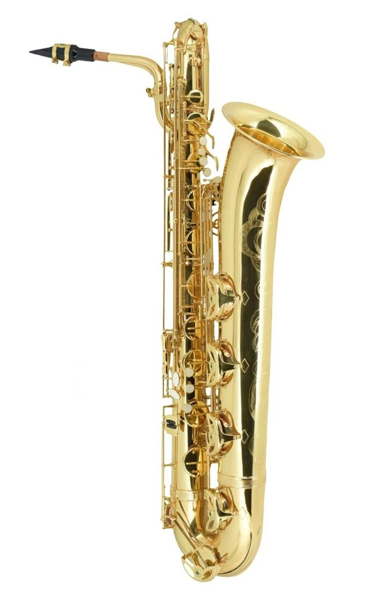

故事
1952 年洛杉磯，一個爵士四重奏，台上沒有鋼琴。帶團的是上低音薩克斯風手 Gerry Mulligan。據說他們演出的俱樂部很小，台上根本沒有鋼琴。
他乾脆只留貝斯和鼓，再加一把小號。吹小號的，是當時還沒什麼名氣的 Chet Baker。沒有鋼琴按和弦，兩支管樂就自己對話、互相補位。

一支吹旋律，另一支就在底下吹出和聲的線條。這種乾淨、輕盈的聲音，後來成了西岸酷派爵士的代表。下次聽爵士，想想少了一樣樂器，有時反而聽得更清楚。
故事後面
一九五二年在洛杉磯，Gerry Mulligan 組了一個沒有鋼琴的四重奏，小號手是當時還不太有名的 Chet Baker。
沒有鋼琴按和弦，兩支管樂就自己對話、互相補位，一支吹旋律，一支在底下吹出和聲線條。
這種乾淨、輕盈的聲音，成了西岸酷派爵士的代表。

這樣聽
聽少了鋼琴，小號和薩克斯風之間的空間有多大。
逐句英文
Los Angeles, 1952: a jazz quartet with no piano on stage.
It was led by baritone saxophonist Gerry Mulligan.
Reportedly the club was small and had no piano on the bandstand.
So he kept just bass and drums, plus one trumpet.
The trumpeter was a little-known Chet Baker.
With no piano playing chords, the two horns talked to each other and filled the space.
One carried the melody while the other wove a harmony line beneath it.
That clean, light sound came to represent West Coast cool jazz.
Next time you listen, consider how leaving out an instrument can make everything clearer.
查證筆記與出處
Gemini 稿「鋼琴上擺滿酒杯」查不到出處，已刪；沒有鋼琴的原因有幾種說法，寫據說。Chet Baker 之前做過專集，這裡只帶一句。
https://en.wikipedia.org/wiki/Gerry_Mulligan
https://en.wikipedia.org/wiki/Chet_Baker
一分鐘影片版在 Instagram @jazz101tw。